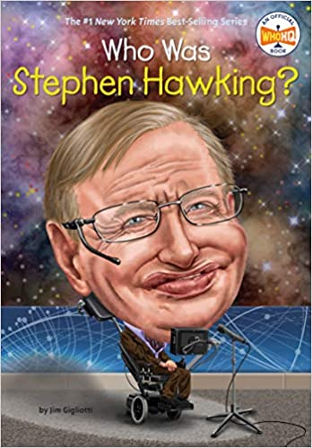
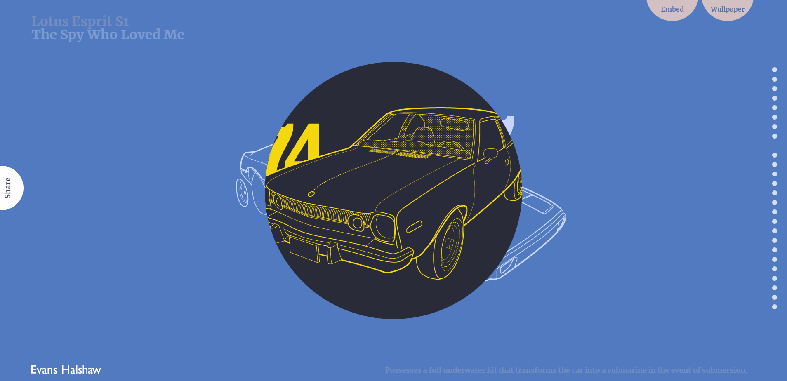
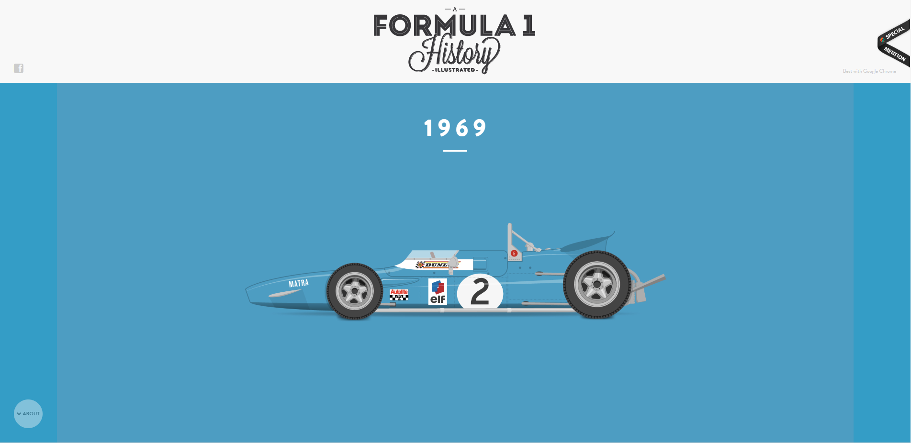

Project 2 | Timeline
Research Assignment
- Who is your favorite artist? Why?
Currently my favorite artist is James White, aka SignalNoise, because I enjoy his graphic style and the use of retro themes. He also has done work for video games, bands and media that I personally enjoy.
- Who is your favorite author? Why?
My favorite author is H.P. Lovecraft, the pioneer of cosmic horror and creator of Cthulu. I enjoy his detective like storytelling of mysterious and strange events as well as the spin off movies, boardgames and video games from the genre.
- If you could read only one biography right now, what would it be? Find an image of the cover of this biography and place it in this webpage using the image tag.

- Write your own biography in ten chronological sentences.
- Born in Ft. Lauderdale, FL on 7/27/1990
- Grew up playing football, surfing, biking, and drumming.
- Parents split, moved country western North Carolina mid-freshman year.
- Learned about moonshine, the Marine Corps through JROTC and made the decision to join the Marine Corps
- 2009, stepped into the yellow footprints at Parris Island and underwent a major change.
- Met a girl, had a baby, then 9 days later deployed to Afghanistan.
- Came home a bit different, had some issues, broke up with girl, then 2 months later deployed to afghanistan.
- Came home, met a girl, fought for custody, reenlisted and moved to Quantico, VA with girl.
- Married girl, had a baby, got out of the Marine Corps and moved to Virginia Beach.
- Got more custody of my first kid, established a love of design, realized I am a bit different than most students and started enjoying the civilian life.
- View the following timeline websites and place a screen shot of your favorite in this web page using the image tag. Explain your choice.

I really enjoyed the scroll efffects on this website and how interactive and engaging it is with the animation. Probably one of the more difficult ones to replicate but I do enjoy a challenge.
- Find an example of a timeline that you think is designed well and place it in this webpage using the image tag.

- Name two historical events that interest you.
- WW2
- The Golden Age of Piracy
- If you had to do a research paper about a scientific phenomena, what would the topic be?
Deja Vu has always been quite a weird thing to experience, and is one that I would like to learn more about
- What do you believe is the most important invention or discovery to date? Why?

I believe that the rocket was the most important invention to date because it has been the foundation that the interconnect world has been built upon. Satellite launches, deep space probes, global mapping, solar mapping, and all other major discoveries rode inside of the rocket.
- Name an event that you think changed the world for better. How about for the worse?
I believe that World War II have changed the world for the better, seems odd to chose war but I believe this was a key moment in showing that the world was changing from distant countries to interconnected. America had no real issue in europe, were not connected, but stepped in to help allies and showed its might with the atomic bombs. I believe that it was a signal that the times of empires conquering was over.
As for the worst, I think the current events are a great example, people scared of a virus that is less likely to kill you than driving your automobile, liberal cities are burning down, black and white people hate white people for being white, cops are being targeted by criminals, mob justice is apparently a thing and the actors I grew up watching are a bunch of disgusting pedophiles.